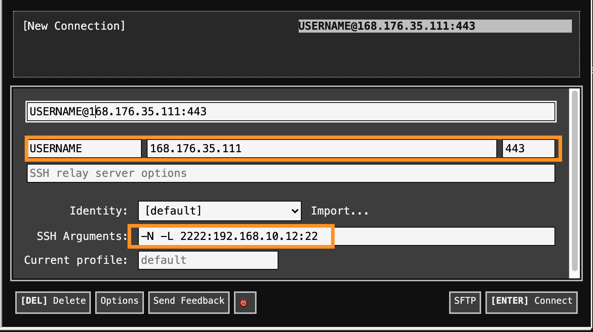

Herramientas computacionales locales y remotas
Table of Contents
En este documento se presentan algunas herramientas que pueden ser útiles para estudiantes que requieren algunos recursos computacionales remotos o locales.
1. Local: Virtual box
En este caso pueden usar una máquina virtual que he diseñado para este fin, o ustedes mismos por su cuentas instalar y configurar todo lo necesario en su distribución Linux favorita. Para que funcione la máquina virtual es necesario que su procesador soporte virtualización. Esto pasa con la mayoría, sean AMD o Intel, pero lastimosmente casi nunca está activado. Para activar esa opción, deben entrar a la bios (normalmente cuando arranca el computador deben ver la opción de setup o similar y a qué tecla corresponde, como F2, F10 o F12, y presionarla) y una vez en la bios buscar y activar la opción de virtualizacicón. Se pueden seguir las instrucciones en (aunque deben ver si aplica o no a su bios; si no aplica, deben buscar su modelo exacto en google) https://www.softzone.es/2016/07/23/como-activar-la-virtualizacion-en-los-procesadores-intel-amd-desde-biosuefi/
Las instrucciones a seguir son las siguientes:
1.1. Instalación de virtualbox y el extension pack (una sola vez)
- Instalar virtualbox en su computador. Lo pueden descargar de https://www.virtualbox.org/wiki/Downloads . Existen instaladores para Windows, linux, mac.
- Instalar virtualbox extension pack tambien descargando del mismo sitio (como ven la versión debe coincidir con la de virtual box). Le dan doble click y lo abren con virtualbox. Esta utilidad les permite soportar USB3, compartir directorios entre el host (su computador) y el guest (la máquina virtual), etc.
1.2. Instalación de la máquina virtual (una sola vez)
Descargar la siguiente imagen de maquina virtual que se ha creado (aprox 5.0 GB): https://tinyurl.com/Slack64-VirtualBox (Debe descargar el archivo único d extensión
.ova):
Abrir virtualbox e importar la maquina virtual recién descargada :
File -> Import Appliance(importan el archivobox.ova):
Si lo desean puede cambiar alguna configuración, como añadir más memoria RAM y aumentar el número de procesadores asociados. No cambie la configuración de red a menos que sepa lo que está haciendo:
Este proceso puede tardar varios minutos
NOTA: Si después de importar exitosamente la máquina virtual usted la inicia y ésta lo lleva a una shell interactiva de uefi como la siguiente:
se le sugiere que apague la máquina virtual, entre a settings y en sistema desactive la opción de UEFI como muestra la siguiente figura:
Después de esto podrá iniciar la máquina virtual sin problema.
1.3. Opcional: Configurar un directorio compartido entre el host y la máquina virtual
Si desea poder leer y escribir desde la máquina virtual en un directorio
compartido entre su host y la máquina, debe crear un directorio compartido
siguiendo configurando la máquina virtual (apagada) así: va a Settings ->
Shared Folders, da click en el ícono que tiene una carpeta con un signo +, en
Folder Path navega en su sistema host y escoge el directorio que desea
compartir, en folder name le coloca el nombre shared (obligatorio), deja SIN
marcar Read-only y Auto-mount, si le sale la opción lo marca como permanente, y
listo. La máquina virtual está configurada para que cada vez que inicia intenta
montar el directorio compartido llamado shared en la ruta /media/hd. Allí
podrá encontrar sus archivos compartidos.
1.4. Usar la máquina virtual
Iniciar la máquina virtual (dándole start) y esto debería iniciar un linux sin problema. El nombre de usuario es
live, dan enter, y el password eslive. Pueden configurar la resolución en el menúViewde virtualbox, escogiendo la resolución o el escalamiento que deseen. También, habiendo iniciado a linux, en settings pueden cambiar la resolución de la pantalla para que se vea mejor en sus computadores.La máquina virtual tiene configurada la consola y el emacs tradicional. También se ha configurado el teclado para que sea latinoamericano, como la mayoría de sus teclados. El entorno gráfico es Xfce 4.16 (muy liviano), y tiene el navegador básico (firfox 78), libreoffice, editores, compiladores, etc.
2. Local: Live usb
La máquina virtual le permite ejecutar todo un sistema operativo muy eficiente, pero no necesariamente usa todos los recursos de su computador. Una forma de resolver esto es usar una live usb que tenga persistencia y en donde usted mismo instale las herramientas necesarias. Normalmente en la sala del departamento usamos slackware live , por su bajo consumo de recursos y gran estabilidad, https://alien.slackbook.org/blog/slackware-live-edition/ . Sin embargo, para usar persistencia, la usb live debe ser creada desde linux, no se puede desde windows. Entonces se recomienda usar otras versiones pero allí será necesario que usted mismo se encargue de instalar lo necesario. La ventaja es que usted crea la usb con persistencia, reinicia su computador, presiona la tecla de boot correspondiente al arrancar, lo hace arranacar del puerto usb (donde se supone está conectada la memoria), y entonces tendrá disponible linux con todos los recursos de su computador. Para crear la memoria con persistencia puede usar rufus en windows, https://rufus.ie/ , o unebootin, https://unetbootin.github.io/ . En cualquier caso , esos programas le permiten escoger la distribución en la cual basarse para crear la memoria usb live. Esto tambien implica que se van a demorar descargando el iso de alguna distribución, al menos unos 5Gb. En unebootin se recomienda usar ubuntu ya que es la única que permite persistencia. En rufus debe haber algo similar.
2.1. Ejemplo con Unebootin
Se supone que ya ha instalado unebootin. Ejecute el programa y configurelo como
muestra la figura. En este caso se han asignado 5Gb (depende del tamaño de la
memoria, puede ser aproximadamente igual tamaño total menos 4GB) para la
persistencia (solamente funciona con Ubuntu), y CERCIÓRESE MUY BIEN DE
SELECCIONAR EL NOMBRE EXACTO DE LA UNIDAD DE USB DRIVE, porque de otra manera
puede arriesgarse a formatear su computador. El nombre que aparece en la figura
es típico de Mac Os X. En Windows debe ser de la form D: o similar.
Como en este caso no se ha descargado previamente ubuntu, unebootin lo hará por usted pero eso quiere decir que se tomará un buen tiempo porque son apróximadamente 3 GB. En la figura se muestra esta etapa

Luego se comenzarán a copiar los archivos de la imagen iso recién descargada a la usb, como muestra la figura
Mas adelante unetbootin configurará la persistencia y finalmente terminará mostrando una ventana como la siguiente

Ahora tiene lista su usb con persistencia. Lo que queda es simplemente que mantenga la usb en el puerto usb, apague y encienda su máquina y la haga bootear desde la usb (depende del modelo del comoutador, a veces es presionando F2, otras F12, debe buscar en google), y su computador cargará este linux de la usb y usted podrá usar linux , sin haberlo instalado, y con todas las capacidades de su máquina.
2.2. TODO Check Ventoy
2.3. TODO Show how to use balenaetcher
https://www.balena.io/etcher/ This allows to easily burn any iso and any platform.
3. Remoto: Acceso ssh a la sala de física
La sala de cómputo tiene un servidor básico de entrada que además comparte archivos y autenticación con los nodos. La sala es completamente heterogénea, siendo una reunión de diversos computadores con diversas características y edades. Actualmente () se tienen:
- 8 computadores de 8 threads
- 8 computadores de 4 threads
- 1 computador de 6 threads
- 7 computadores de 2 threads
La memoría ram varía de apenas 1Gb para los más viejos, a 12 Gb en los más nuevos. La capacidad del disco duro también varía, aunque el home de los usuarios es un directorio compartido en todos los nodos desde el servidor, usando NFS. La mezcla de diversas, viejas y pequeñas características obliga a usar una distribución eficiente, y en este caso se Slackware 14.2+ (current), con el entorno gráfico xfce4.16. Se incluyen los compiladores más actualizados, editores, etc.
Usted debe tener cuenta en la sala de física. Normalmente, su profesor debe gestionar esta creación de cuentas.
Para realizar la conexión, el usuario tiene dos opciones:
- Conectarse por el protocolo ssh al servidor principal y de allí navegar a los computadores internos que desee, también usando ssh.
- Conectarse con un cliente x2go a cualquier computador interno. Para esto es necesario configurar un tunnel usando el servidor como bastión intermedio.
Estas opciones serán descritas con más detalle a continuación. Es importante notar que no se deben ejecutar tareas en el servidor de login
3.1. Conexión por ssh
3.1.1. Conexión básica por terminal
El ip público del servidor es 168.176.35.111. La conexión básica por ssh se establece de la siguiente manera
ssh -p 443 USERNAME@168.176.35.111
donde 443 es el puerto de conexión y debe reemplazarse USERNAME por el
nombre de usuario (debe tener una cuenta previamente creada). Este comando le
pedirá la clave (si no está usando llaves de autenticación, o si es la primera
vez) y si la autenticación es exitosa el usuario observará el siguiente prompt:

Allí se describen los diversos ips internos a los que se puede conectar el usuario. Por ejemplo, si desea conectarse a un nodo de 4 threads, podría usar
ssh 192.168.10.12
o también
ssh sala12
No es necesario especificar el puerto ya que se usa el que es por defecto, el 22. Allí podrá ejecutar sus trabajos.
NOTA: La primera vez que se conecte a cada nodo, ya sea el de login o uno interno, se le va a preguntar por la autenticidad de ese host. Debe aceptarla.
3.1.2. Conexión desde Windows
Windows 10 trae soporte para cliente ssh, especialmente en el WSL. En lo que sigue se mostrarán opciones para esta y otras versiones de Windows:
- Instale una extensión de google chrome llamada chrome secure shell .
- Instale una aplicación: como kitty, putty, winsshterm , MobaXterm(basic)
Las imágenes que siguen muestran la conexión desde kitty (en una máquina virtual de windows 7) o desde la extensión de chrome (que funciona en cualquier instalación de chrome)
- Chrome secure shell
Ejecute la extensión e introduzca la información necesaria
Debe autorizar los permisos necesarios, como darle permiso a la extensión para conectarse o aceptar la identidad de la máquina remota escribiendo yes en el cuadro que sale

Y luego podrá entrar sin problema

Es importante resaltar que esta extensión soporta mosh, que le permite reconectarse automáticamente después de una caída de conexíon.
- kitty
Configuración de la conexión: simplemente escriba el ip, el puerto, y da click en start (a la izquierda)

Luego escriba su nombre de usuario y contraseña y deberá entrar al prompt del login server:

3.2. Conexión gráfica
3.2.1. Usando x2goclient
El cliente x2go permite conectarse a un servidor x2go y tener un escritorio remoto encriptado a través de ssh. Actualmente, la mayoría de los nodos internos ofrecen un servidor x2go. El servidor principal de login no tiene un servidor x2go, para evitar que se realicen trabajos allí. Podría usarse un tunel para conectarse a los clientes internos, pero x2go ofrece la posibilidad de configurar un proxy lo que facilita la conexión a un cliente interno. la referencia básica de lo que se muestra a continuación se encuentra en https://www.nas.nasa.gov/hecc/support/kb/x2go-an-alternative-to-x11-and-vnc_651.html
- Configuración de una sesión de x2go
- Instale el cliente descargándolo de client desde https://wiki.x2go.org/doku.php/download:start .
Ejecute x2go y en el menú seleccione
Session -> New Session. Allí llene la información que básicamente sería darle un nombre a la sessión, en Host colocar el ip del cliente interno al que se quiera conectar (en el ejemplo se muestra 192.168.10.37), en login su nombre de usuario, en el puerto colocar 22 (este es el puerto del cliente interno), activar conectar a través de un proxy y allí colocar los datos del servidor de entrada, como muestra la siguiente figura. Además en el tipo de sesión selccionar XFCE:
- Conexión con x2go
Una vez tenga configurada alguna sesión, simplemente de doble click a la sesión, llene el password si es necesario, y tendrá a su disposición un entorno gráfico ejecutado en el computador interno que haya escogido en la configuración, como lo muestra la siguiente figura (la primera vez que lo ejecute xfce le preguntará por la configuración: escoja por defecto, NO escoja empty panel)

- Recomendación con x2go: deshabilitar screensaver
Para evitar que la sesión se bloquee sin recuperación luego de unos minutos de inactividad se les recomienda que deshabiliten los programas xscreensaver, xfce4-screensaver y el bloqueo de pantalla, todos accesibles desde el menú y configuración. Las siguientes figuras muestran cómo deben quedar deshabilitados estos servicios:
- xscreensaver
- xfce4-screensaver
- screen lock (second tab from xfce4 screensaver prefs):
3.2.2. Usando un servidor vnc
Esto es posible pero debe crear un tunel que redireccione un puerto del servidor vnc interno de un cliente a su computador, así que se recomienda que por ahora use x2go.
3.3. Otros tips
3.3.1. Usando proxyjump para acceder directamente a un computador interno (terminal)
Si un usuario desea conectarse directamente a un pc interno puede usar el servidor de login como bastión intermedio, a través el siguiente comando
ssh -J USERNAME@168.176.35.111:443 USERNAME@192.168.10.12
Y en este caso entrará directamente al nodo 192.168.10.12 y será transparente
su conexión.
- Windows
No todos los clientes ssh de windows soportan las versiones recientes de ssh y la opción proxyjump. Sin embargo puede seguir las siguientes instrucciones para kitty , o usar plink, o crear un tunnel como se muestra más adelante.
3.3.2. Configuración de un tunel para acceso directo a un nodo interno
El objetivo de este punto es establecer una conexión directa a un nodo interno y dejar esta conexión expuesta localmente en un puerto específico. Esto se llama “abrir un túnel”. La utilidad de un tunel es que no será necesario hacer dos logins y además permitirá conectarse graficamente a un escritorio compartido en una sesión gráfica.
Asumiendo que queremos un túnel al computador interno de ip 192.168.10.12, el comando a ejecutar es
ssh -f -N -o 'Compression=no' -L 2222:192.168.10.12:22 -p 443 USERNAME@168.176.35.111
En este caso, el puerto local del tunel es el 2222.
Para probar que el tunel funciona, ejecute:
ssh -p 2222 USERNAME@localhost
y deberá aparecer inmediatamente logueado en 192.168.10.12 .
El túnel debe ser funcional para que pueda usar x2goclient.
- Windows
chrome secure shell: configure la conexión como se muestra a continuación, conéctse y manténgala abierta

kitty: Además de colocar el ip y el puerto, en las opciones a la izquierda debe ir a ssh, dar click en el símbolo +, seleccionar tunnel, en source port color
2222, en destination192.168.10.12:22, le da add, y debe quedar como se muestra a continuación

Luego le da click en start y NO cierra la sesión.
3.3.3. Conexión por medio de llaves y sin password
Si prefiere no escribir la clave cada vez que se conecta, además de aumentar la seguridad, puede crear una llave pública privada y copiarla al servidor de login (ver, por ejemplo, https://www.tecmint.com/ssh-passwordless-login-using-ssh-keygen-in-5-easy-steps/). Basicamente debe ejecutar los siguientes comandos
Generar la llave (puede dejar vacía la passphrase de la llave):
ssh-keygen -t rsa
Copiar la llave
ssh-copy-id -p 443 USERNAME@168.176.35.111Debe introducir el password. Si lo anterior funciona exitosamente, la siguiente vez que use ssh al servidor de login no tendrá que introducir la clave.